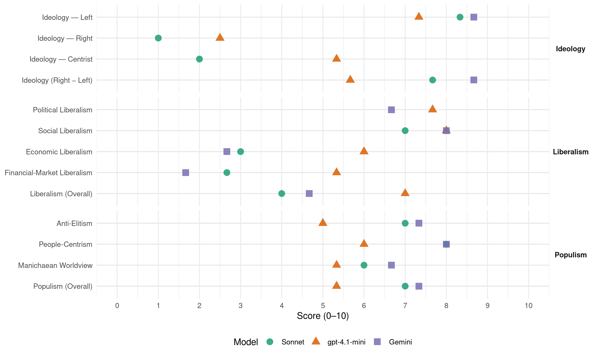

Alianza PAIS (Ecuador, 2017)
manifesto_id 154322_201702
Get full text: This site shows derived annotations and short verbatim quotes only. The full manifesto text is © Manifesto Project / WZB — obtain it via manifesto-project.wzb.eu using the manifesto_id above.
Headline scores
| Dimension | Sonnet | gpt-4.1-mini | Gemini |
|---|---|---|---|
| Populism (Overall) | 7.0 | 5.3 | 7.3 |
| Anti-Elitism | 7.0 | 5.0 | 7.3 |
| People-Centrism | 8.0 | 6.0 | 8.0 |
| Manichaean Worldview | 6.0 | 5.3 | 6.7 |
| Ideology (Right − Left) | 7.7 | 5.7 | 8.7 |
| Liberalism (Overall) | 4.0 | 7.0 | 4.7 |
| Political Liberalism | – | 7.7 | 6.7 |
| Social Liberalism | 7.0 | 8.0 | 8.0 |
| Economic Liberalism | 3.0 | 6.0 | 2.7 |
| Financial-Market Liberalism | 2.7 | 5.3 | 1.7 |
Evidence per dimension
Economic Liberalism
Gemini · score 3.0 · verified · chunk 1
“El mercado es nuestro servidor”
El Ecuador opta por la vida. Por eso, nuestra sociedad solidaria construye el Buen Vivir, en corresponsabilidad y en armonía. El mercado es nuestro servidor, no nuestro patrón.
Gemini · score 3.0 · verified · chunk 2
“Gobernar los mercados, controlar los monopolios”
buen sirviente pero un pésimo amo! Gobernar los mercados, controlar los monopolios y regular los capitales para ponerlos
Gemini · score 2.0 · verified · chunk 3
“establecer mecanismos para controlar la especulación y el tráfico”
Estableceremos mecanismos para controlar la especulación y el tráfico de tierras, invasiones y asentamientos irregulares, recientes y futuros.
gpt-4.1-mini · score 7.0 · verified · chunk 1
“El mercado es nuestro servidor, no nuestro patrón”
El mercado es nuestro servidor, no nuestro patrón. Profundizaremos los cambios, y defenderemos los avances sociales. La Revolución Ciudadana ha demostrado compromiso con el país.
gpt-4.1-mini · score 5.0 · verified · chunk 2
“fomentar la competencia en igualdad de condiciones y oportunidades”
Le corresponde al Estado promover la reducción de las distorsiones de la intermediación, asegurando la transparencia y eficiencia de los mercados mediante el fomento de la competencia en igualdad de condiciones y oportunidades.
gpt-4.1-mini · score 6.0 · verified · chunk 3
“un mercado al servicio de las personas, con capitales que sirvan”
Un Estado al servicio de sus ciudadanos, con un mercado al servicio de las personas, con capitales que sirvan para superar las desigualdades. Un país distinto que puede cumplir sus sueños, que ha superado los males estructurales y que está listo a volar a nuevas alturas.
Sonnet · score 4.0 · mixed · chunk 1
“El mercado es nuestro servidor, no nuestro patrón”
El Ecuador opta por la vida. Por eso, nuestra sociedad solidaria construye el Buen Vivir, en corresponsabilidad y en armonía. El mercado es nuestro servidor, no nuestro patrón
Sonnet · score 3.0 · verified · chunk 2
“Gobernar los mercados, controlar los monopolios”
¡El mercado es un buen sirviente pero un pésimo amo! Gobernar los mercados, controlar los monopolios y regular los capitales para ponerlos al servicio del bien común
Sonnet · score 3.0 · verified · chunk 3
“mercado al servicio de las personas”
Un Estado al servicio de sus ciudadanos, con un mercado al servicio de las personas, con capitales que sirvan para superar las desigualdades
Financial-Market Liberalism
Gemini · score 2.0 · verified · chunk 1
“regulación de medios de pago”
Continuaremos con la regulación y el control de medios de pago como son las tarjetas
Gemini · score 2.0 · verified · chunk 2
“garanticen el control en la salida y entrada de capitales”
Aplicaremos mecanismos que garanticen el control en la salida y entrada de capitales y divisas. Esto permitirá, por una
Gemini · score 1.0 · verified · chunk 3
“consolidar la creación del Banco del Sur y del Fondo”
Debemos consolidar la creación del Banco del Sur y del Fondo del Sur son una garantía para las nuevas generaciones latinoamericanas, para no depender de otras regiones
gpt-4.1-mini · score 7.0 · verified · chunk 1
“Mediante la Constitución, la Revolución Ciudadana prohibió el congelamiento de depósitos y los salvatajes bancarios”
Mediante la Constitución, la Revolución Ciudadana prohibió el congelamiento de depósitos y los salvatajes bancarios; realizó una auditoría de la crisis bancaria, implementó una red de seguridad financiera para prevenir futuras crisis.
gpt-4.1-mini · score 4.0 · verified · chunk 2
“prohibió el congelamiento de depósitos y los salvatajes bancarios”
Mediante la Constitución, la Revolución Ciudadana prohibió el congelamiento de depósitos y los salvatajes bancarios; realizó una auditoría de la crisis bancaria, implementó una red de seguridad financiera para prevenir futuras crisis.
gpt-4.1-mini · score 5.0 · verified · chunk 3
“consolidar la creación del Banco del Sur y del Fondo del Sur”
Debemos consolidar la creación del Banco del Sur y del Fondo del Sur son una garantía para las nuevas generaciones latinoamericanas, para no depender de otras regiones en la obtención de ayuda económica. Además, así no saldrán tantos capitales líquidos latinoamericanos a otras regiones.
Sonnet · score 3.0 · verified · chunk 1
“Aplicaremos mecanismos que garanticen el control en la salida y entrada de capitales”
Aplicaremos mecanismos que garanticen el control en la salida y entrada de capitales y divisas. Esto permitirá, por una parte, mejorar la propia estabilidad de la economía
Sonnet · score 2.0 · verified · chunk 2
“control en la salida y entrada de capitales”
Aplicaremos mecanismos que garanticen el control en la salida y entrada de capitales y divisas. Esto permitirá, por una parte, mejorar la propia estabilidad
Sonnet · score 3.0 · verified · chunk 3
“sistema financiero internacional, justo, transparente”
el establecimiento de un sistema financiero internacional, justo, transparente y equitativo
Political Liberalism
Gemini · score 7.0 · verified · chunk 1
“democracia y la participación”
Queremos la democracia y la participación, sin las exclusiones.
Gemini · score 7.0 · verified · chunk 2
“garantizar el derecho a la libertad de expresión”
evitar el monopolio de la propiedad de los medios de comunicación y garantizar el derecho a la libertad de expresión de la ciudadanía.
Gemini · score 6.0 · verified · chunk 3
“base de la independencia judicial, demandando mayor apertura”
Se debe consolidar la carrera judicial, como base de la independencia judicial, demandando mayor apertura hacia la sociedad y niveles éticos
gpt-4.1-mini · score 8.0 · verified · chunk 1
“Queremos la democracia y la participación, sin las exclusiones”
Queremos la democracia y la participación, sin las exclusiones. Queremos pasar del individualismo al trabajo en equipo, en función del interés colectivo. Queremos la libertad de expresión para toda la población, no solo esa libertad para los dueños de medios privados de comunicación.
gpt-4.1-mini · score 7.0 · verified · chunk 2
“la Constitución determina como deber prioritario del Estado evitar las prácticas monopólicas”
La Constitución determina como deber prioritario del Estado evitar las prácticas monopólicas y oligopólicas, en particular en el sector privado, y otras que afecten el funcionamiento de los mercados.
gpt-4.1-mini · score 8.0 · verified · chunk 3
“rendición de cuentas semanal que el Presidente de la República realiza”
En estos años hemos predicado con el ejemplo, ahí está, para citar un caso, la rendición de cuentas semanal que el Presidente de la República realiza sobre su trabajo y el de su gobierno. También podemos citar la rendición de cuentas anual realizada por la Asamblea Nacional, así como aquellas a las que están obligadas las entidades públicas.
Sonnet · score 6.0 · mixed · chunk 1
“robustecer la democracia, el debate respetuoso”
Este es un programa para robustecer la democracia, el debate respetuoso y los consensos sólidos. Reconoce y valora las diferencias, los disentimientos, las discrepancias
Sonnet · score 5.0 · mixed · chunk 2
“fortalecer la democracia y la libre circulación”
para generar la discusión y el debate sobre los temas fundamentales que afectan a nuestra sociedad y fortalecer la democracia y la libre circulación de las ideas
Sonnet · score 5.0 · mixed · chunk 3
“independencia judicial, demandando mayor apertura”
consolidar la carrera judicial, como base de la independencia judicial, demandando mayor apertura hacia la sociedad
Liberalism (Overall)
Gemini · score 5.0 · verified · chunk 1
“democracia y la participación”
Queremos la democracia y la participación, sin las exclusiones.
Gemini · score 5.0 · verified · chunk 2
“garantizar el derecho a la libertad de expresión”
evitar el monopolio de la propiedad de los medios de comunicación y garantizar el derecho a la libertad de expresión de la ciudadanía.
Gemini · score 4.0 · verified · chunk 3
“eliminar todas las formas de discriminación entre las personas”
Para alcanzar la justicia social es condición fundamental promover la igualdad y eliminar todas las formas de discriminación entre las personas.
gpt-4.1-mini · score 8.0 · verified · chunk 1
“Queremos la democracia y la participación, sin las exclusiones”
Queremos la democracia y la participación, sin las exclusiones. Queremos pasar del individualismo al trabajo en equipo, en función del interés colectivo. Queremos la libertad de expresión para toda la población, no solo esa libertad para los dueños de medios privados de comunicación.
gpt-4.1-mini · score 6.0 · verified · chunk 2
“fomentar la competencia en igualdad de condiciones y oportunidades”
Le corresponde al Estado promover la reducción de las distorsiones de la intermediación, asegurando la transparencia y eficiencia de los mercados mediante el fomento de la competencia en igualdad de condiciones y oportunidades.
gpt-4.1-mini · score 7.0 · verified · chunk 3
“rendición de cuentas semanal que el Presidente de la República realiza”
En estos años hemos predicado con el ejemplo, ahí está, para citar un caso, la rendición de cuentas semanal que el Presidente de la República realiza sobre su trabajo y el de su gobierno. También podemos citar la rendición de cuentas anual realizada por la Asamblea Nacional, así como aquellas a las que están obligadas las entidades públicas.
Sonnet · score 5.0 · mixed · chunk 1
“fortalecer la democracia y la participación social”
para fortalecer la inclusión y la cohesión sociales, para impulsar aún más el respeto por las diversidades, para fortalecer la democracia y la participación social
Sonnet · score 4.0 · verified · chunk 2
“El mercado es un buen sirviente pero un pésimo amo”
¡El mercado es un buen sirviente pero un pésimo amo! Gobernar los mercados, controlar los monopolios y regular los capitales
Sonnet · score 5.0 · mixed · chunk 3
“capitales que sirvan para superar las desigualdades”
con un mercado al servicio de las personas, con capitales que sirvan para superar las desigualdades
Anti-Elitism
Gemini · score 8.0 · verified · chunk 1
“destrozado por la partidocracia y sus líderes”
un sistema político destrozado por la partidocracia y sus líderes, muchos de los cuales
Gemini · score 6.0 · verified · chunk 2
“frenar los abusos de los grandes capitales”
aprobó la Ley Orgánica de Regulación y Control de Poder de Mercado, para frenar los abusos de los grandes capitales en desmedro de la iniciativa
Gemini · score 8.0 · verified · chunk 3
“con un sistema estatal corrompido, con una clase política”
Éramos un país pobre, con una profunda miseria, con un sistema estatal corrompido, con una clase política que había roto todos los principios de la ética.
gpt-4.1-mini · score 9.0 · verified · chunk 1
“Recuperamos el Estado para la gente, se lo arrebatamos de las manos a las élites”
Ahora estos elementos son parte fundamental de nuestro quehacer cotidiano. Recuperamos el Estado para la gente, se lo arrebatamos de las manos a las élites y cambiamos su enfoque anti popular. Ahora está al servicio del conjunto de la sociedad como un instrumento para el bienestar de la ciudadanía, y no como una herramienta para defender los intereses particulares de las oligarquías.
gpt-4.1-mini · score 3.0 · verified · chunk 2
“gobernar los mercados, controlar los monopolios y regular los capitales”
¡El mercado es un buen sirviente pero un pésimo amo! Gobernar los mercados, controlar los monopolios y regular los capitales para ponerlos al servicio del bien común y del trabajo.
gpt-4.1-mini · score 3.0 · verified · chunk 3
“una clase política que había roto todos los principios de la ética”
Éramos un país pobre, con una profunda miseria, con un sistema estatal corrompido, con una clase política que había roto todos los principios de la ética. Esa voluntad de cambio fue recogida, sucesivamente, en varios programas de gobiernos, en planes nacionales del buen vivir, para hacer realidad los sueños de la mayoría de ecuatorianos.
Sonnet · score 9.0 · verified · chunk 1
“política tenía como objetivo la satisfacción de los intereses de las oligarquías, de las élites”
Antes la ciudadanía estaba abandonada a su propia suerte, la política tenía como objetivo la satisfacción de los intereses de las oligarquías, de las élites y del imperialismo. Ahora la política se centra en la gente
Sonnet · score 6.0 · verified · chunk 2
“intereses del gran capital y de los países poderosos”
los intereses nacionales se hipotecaban a los intereses del gran capital y de los países poderosos. Frente a esto, la misión de la Revolución Ciudadana
Sonnet · score 6.0 · verified · chunk 3
“país del pasado neoliberal”
si todos los ecuatorianos sepultamos al país del pasado neoliberal, que no es el que queremos para la siguiente década
Ideology — Centrist
gpt-4.1-mini · score 6.0 · verified · chunk 1
“Queremos la democracia y la participación, sin las exclusiones”
Queremos la democracia y la participación, sin las exclusiones. Queremos pasar del individualismo al trabajo en equipo, en función del interés colectivo.
gpt-4.1-mini · score 5.0 · verified · chunk 2
“El Estado es la representación del interés general, del bien común”
Un Estado sólido, mercados gobernados y una sociedad activa forman parte sustancial de nuestra propuesta. El Estado es la representación del interés general, del bien común.
gpt-4.1-mini · score 5.0 · verified · chunk 3
“escuchar siempre al pueblo, a nuestro mandante”
La propuesta ha sido clara desde el principio: escuchar siempre al pueblo, a nuestro mandante. Lo hemos hecho durante esta década y el año pasado impulsamos los Diálogos Ciudadanos. Ahora las Conferencias Ideológicas convocaron no solo a nuestra militancia, sino a toda la ciudadanía comprometida con los cambios logrados y con los que faltan por alcanzar.
Sonnet · score 2.0 · verified · chunk 1
“poder popular y el Estado democrático”
Ratificamos nuestra convicción por la construcción del poder popular y el Estado democrático. Por el predominio de los intereses públicos al frente de la administración estatal
Sonnet · score 2.0 · verified · chunk 2
“Un Estado sólido, mercados gobernados”
Un Estado sólido, mercados gobernados y una sociedad activa forman parte sustancial de nuestra propuesta.
Sonnet · score 2.0 · verified · chunk 3
“más allá de banderas políticas”
la Unidad Nacional, más allá de banderas políticas, debe primar por el bien de todos y todas
Ideology — Left
Gemini · score 9.0 · verified · chunk 1
“redistribución de la riqueza”
retomar el rol planificador del Estado, la redistribución de la riqueza y la consolidación
Gemini · score 8.0 · verified · chunk 2
“redistribuir la riqueza para que nadie padezca”
El reto es doble: redistribuir la riqueza para que nadie padezca pobreza ni exclusión, ni necesidad
Gemini · score 9.0 · verified · chunk 3
“los seres humanos y la naturaleza sobre el capital”
Los seres humanos y la naturaleza sobre el capital Fortaleceremos la cooperación Sur-Sur. Privilegiaremos las relaciones comerciales
gpt-4.1-mini · score 8.0 · verified · chunk 1
“Propugnamos la igualdad de derechos y capacidades, y una adecuada distribución de la riqueza”
Igualdad: La actual economía política del mundo, incluyendo América Latina, está marcada por la desigualdad y por un deseo extremo de concentración, a niveles exagerados. Propugnamos la igualdad de derechos y capacidades, y una adecuada distribución de la riqueza.
gpt-4.1-mini · score 7.0 · verified · chunk 2
“redistribución y supresión de privilegios o desigualdades en su acceso”
Promoveremos el acceso equitativo a los medios de producción, evitando la concentración o acaparamiento de factores y recursos productivos, la redistribución y supresión de privilegios o desigualdades en su acceso.
gpt-4.1-mini · score 7.0 · verified · chunk 3
“valores de igualdad de oportunidades, de equidad, de redistribución de la riqueza”
Que esa misma solidaridad nos permita madurar como sociedad. Que sus valores de igualdad de oportunidades, de equidad, de redistribución de la riqueza iluminen el camino en estos momentos difíciles y nos permitan avanzar hacia una sociedad más justa y equitativa.
Sonnet · score 9.0 · verified · chunk 1
“colocar al trabajo sobre el capital”
Nuestro sentido de política pública se centra en el trabajo. Un trabajo estable, bien remunerado y de calidad, con seguridad social. Por eso nuestra obsesión permanente es colocar al trabajo sobre el capital
Sonnet · score 8.0 · verified · chunk 2
“redistribución de la riqueza continuará”
Mediante esta política tributaria de equidad, la redistribución de la riqueza continuará. Implementaremos sistemas de información
Sonnet · score 8.0 · verified · chunk 3
“redistribución de la riqueza iluminen el camino”
sus valores de igualdad de oportunidades, de equidad, de redistribución de la riqueza iluminen el camino en estos momentos difíciles
Ideology (Right − Left)
Gemini · score 9.0 · verified · chunk 1
“izquierda progresista, moderna”
nuestra nueva visión de una izquierda progresista, moderna y sin dogmas.
Gemini · score 8.0 · verified · chunk 2
“redistribuir la riqueza para que nadie padezca”
El reto es doble: redistribuir la riqueza para que nadie padezca pobreza ni exclusión, ni necesidad
Gemini · score 9.0 · verified · chunk 3
“los seres humanos y la naturaleza sobre el capital”
Los seres humanos y la naturaleza sobre el capital Fortaleceremos la cooperación Sur-Sur. Privilegiaremos las relaciones comerciales
gpt-4.1-mini · score 7.0 · verified · chunk 1
“Recuperamos el Estado para la gente, se lo arrebatamos de las manos a las élites”
Ahora estos elementos son parte fundamental de nuestro quehacer cotidiano. Recuperamos el Estado para la gente, se lo arrebatamos de las manos a las élites y cambiamos su enfoque anti popular. Ahora está al servicio del conjunto de la sociedad como un instrumento para el bienestar de la ciudadanía, y no como una herramienta para defender los intereses particulares de las oligarquías.
gpt-4.1-mini · score 5.0 · verified · chunk 2
“redistribución y supresión de privilegios o desigualdades en su acceso”
Promoveremos el acceso equitativo a los medios de producción, evitando la concentración o acaparamiento de factores y recursos productivos, la redistribución y supresión de privilegios o desigualdades en su acceso.
gpt-4.1-mini · score 5.0 · verified · chunk 3
“una clase política que había roto todos los principios de la ética”
Éramos un país pobre, con una profunda miseria, con un sistema estatal corrompido, con una clase política que había roto todos los principios de la ética. Esa voluntad de cambio fue recogida, sucesivamente, en varios programas de gobiernos, en planes nacionales del buen vivir, para hacer realidad los sueños de la mayoría de ecuatorianos.
Sonnet · score 9.0 · verified · chunk 1
“Socialismo del Buen Vivir”
Por ello buscamos enfrentar la adversidad y asegurar los resultados positivos de este proceso hacia el Socialismo del Buen Vivir
Sonnet · score 7.0 · verified · chunk 2
“Hemos logrado revertir la desigualdad”
Hemos logrado revertir la desigualdad por ingresos que nos dejó el neoliberalismo con políticas públicas activas.
Sonnet · score 7.0 · verified · chunk 3
“posición política de izquierda progresista, socialista”
Con la posición política de izquierda progresista, socialista del Buen Vivir, enfrentamos los nuevos desafíos
Ideology — Right
gpt-4.1-mini · score 3.0 · verified · chunk 1
“La visión de los sectores conservadores y de derecha apuesta por volver al pasado y recuperar el imperio del capital”
Las elecciones que se avecinan enfrentarán a dos visiones de país. Nuestra visión se centra en la consolidación de lo logrado estos años y en la profundización de las transformaciones sociales, económicas, políticas y ambientales. La visión de los sectores conservadores y de derecha apuesta por volver al pasado y recuperar el imperio del capital, mediante la reintroducción del neoliberalismo en el Ecuador.
gpt-4.1-mini · score 2.0 · verified · chunk 3
“rechaza el racismo, la xenofobia y toda forma de discriminación”
Ecuador rechaza el racismo, la xenofobia y toda forma de discriminación dentro y fuera de sus fronteras nacionales. Ecuador tiene un papel fundamental en el proceso de paz de Colombia, no solo como sede de las conversaciones de paz entre el Gobierno colombiano y el ELN, sino también en el futuro.
Sonnet · score 1.0 · verified · chunk 1
“integración regional latinoamericana”
En nuestra visión tiene total importancia la integración regional latinoamericana. Por ello creemos en la cartelización de nuestras exportaciones
Sonnet · score 1.0 · verified · chunk 2
“política comercial soberana”
Avanzaremos hacia una política comercial soberana y articulada a los procesos económicos, sociales y culturales nacionales
Sonnet · score 1.0 · verified · chunk 3
“Rechaza que controversias con empresas privadas”
Rechaza que controversias con empresas privadas extranjeras se conviertan en conflictos entre Estados
Manichaean Worldview
Gemini · score 8.0 · verified · chunk 1
“oligárquica o neoliberal rencauchada”
Y tampoco regresará la derecha, en su versión oligárquica o neoliberal rencauchada.
Gemini · score 5.0 · verified · chunk 2
“estructuras y relaciones de poder perversas”
sino que es causada por estructuras y relaciones de poder perversas, que generan condiciones de desigualdad
Gemini · score 7.0 · verified · chunk 3
“frente a décadas de miseria, opresión, exclusión”
Una Década Ganada significa un triunfo de la esperanza, de la vida, de la gente sencilla, humilde, frente a décadas de miseria, opresión, exclusión y desigualdad.
gpt-4.1-mini · score 8.0 · verified · chunk 1
“El poder económico utiliza distintas tácticas para recuperar su viejo poder: manipulación mediática, mentiras descaradas, guerras económicas”
El poder económico utiliza distintas tácticas para recuperar su viejo poder: manipulación mediática, mentiras descaradas, guerras económicas, golpes judiciales y parlamentarios contra la tendencia progresista en América Latina.
gpt-4.1-mini · score 4.0 · verified · chunk 2
“El mercado es un buen sirviente, pero un pésimo amo”
Karl Polanyi, hace más de medio siglo, nos decía que “el mercado es un buen sirviente, pero un pésimo amo”. Mediante la Constitución, la Revolución Ciudadana prohibió el congelamiento de depósitos y los salvatajes bancarios;
gpt-4.1-mini · score 4.0 · verified · chunk 3
“una oposición acérrima que a cada paso ha intentado boicotear nuestro trabajo”
Demostrar en la práctica coherencia ideológica y política nos ha valido el reconocimiento nacional e internacional. También hemos tenido que lidiar con una oposición acérrima que a cada paso ha intentado boicotear nuestro trabajo. Hemos sufrido unas pocas traiciones, que nos han dado grandes lecciones.
Sonnet · score 8.0 · verified · chunk 1
“visión neoliberal de los modernos retrasados y nuestra nueva visión”
Estas son las visiones que se enfrentan hoy: la visión neoliberal de los modernos retrasados y nuestra nueva visión de una izquierda progresista, moderna y sin dogmas
Sonnet · score 5.0 · verified · chunk 2
“larga noche neoliberal”
producto de los efectos de la larga noche neoliberal como el aumento de la marginalidad, el desempleo, la desinversión estatal
Sonnet · score 5.0 · verified · chunk 3
“oposición acérrima que a cada paso”
hemos tenido que lidiar con una oposición acérrima que a cada paso ha intentado boicotear nuestro trabajo
People-Centrism
Gemini · score 9.0 · verified · chunk 1
“trabajando para la gente, por la gente”
la revolución debe empezar en cada territorio, trabajando para la gente, por la gente y con la gente.
Gemini · score 7.0 · verified · chunk 2
“¡Al pueblo lo que es del pueblo!”
evitando la innecesaria burocracia de pedir copias de documentos. Capacitaremos a la población en el uso de tecnologías de información y comunicación. ¡Al pueblo lo que es del pueblo! Democratizar la propiedad para construir
Gemini · score 8.0 · verified · chunk 3
“escuchar siempre al pueblo, a nuestro mandante”
La propuesta ha sido clara desde el principio: escuchar siempre al pueblo, a nuestro mandante. Lo hemos hecho durante esta década
gpt-4.1-mini · score 8.0 · verified · chunk 1
“Somos millones de ecuatorianas y ecuatorianos que queremos construir juntos un futuro feliz”
Queremos ser actores fundamentales de ese cambio. Somos millones de ecuatorianas y ecuatorianos que queremos construir juntos un futuro feliz, al lado de un gobierno que ame a toda la sociedad ecuatoriana, especialmente a los que más necesitan.
gpt-4.1-mini · score 4.0 · verified · chunk 2
“¡Al pueblo lo que es del pueblo! Democratizar la propiedad”
¡Al pueblo lo que es del pueblo! Democratizar la propiedad para construir una economía incluyente y plural. La desigualdad es una característica definitoria de los países de América Latina.
gpt-4.1-mini · score 6.0 · verified · chunk 3
“nuestro pueblo gradualmente ha vuelto a confiar en las organizaciones políticas”
Esa plena confianza popular se ha puesto a prueba en 10 procesos electorales, lo que demuestra cómo nuestro Gobierno ha caminado junto a los sectores populares y junto a la clase media para volver a tener Patria. Sin duda, los retos han sido enormes y muchos a lo largo de esta Década Ganada. Hemos superado momentos tremendamente difíciles y lo hemos logrado porque desde el principio la planificación, el trabajo bien hecho, la eficiencia nos han guiado en el manejo del Estado.
Sonnet · score 9.0 · verified · chunk 1
“Somos millones de ecuatorianas y ecuatorianos que queremos construir juntos”
Somos millones de ecuatorianas y ecuatorianos que queremos construir juntos un futuro feliz, al lado de un gobierno que ame a toda la sociedad ecuatoriana
Sonnet · score 7.0 · verified · chunk 2
“Al pueblo lo que es del pueblo”
¡Al pueblo lo que es del pueblo! Democratizar la propiedad para construir una economía incluyente y plural.
Sonnet · score 8.0 · verified · chunk 3
“escuchar siempre al pueblo, a nuestro mandante”
La propuesta ha sido clara desde el principio: escuchar siempre al pueblo, a nuestro mandante. Lo hemos hecho durante esta década
Populism (Overall)
Gemini · score 8.0 · verified · chunk 1
“arrebató en el año 2007”
recuperar el poder que el pueblo les arrebató en el año 2007.
Gemini · score 6.0 · verified · chunk 2
“¡Al pueblo lo que es del pueblo!”
evitando la innecesaria burocracia de pedir copias de documentos. Capacitaremos a la población en el uso de tecnologías de información y comunicación. ¡Al pueblo lo que es del pueblo! Democratizar la propiedad para construir
Gemini · score 8.0 · verified · chunk 3
“con un sistema estatal corrompido, con una clase política”
Éramos un país pobre, con una profunda miseria, con un sistema estatal corrompido, con una clase política que había roto todos los principios de la ética.
gpt-4.1-mini · score 8.0 · verified · chunk 1
“Recuperamos el Estado para la gente, se lo arrebatamos de las manos a las élites”
Ahora estos elementos son parte fundamental de nuestro quehacer cotidiano. Recuperamos el Estado para la gente, se lo arrebatamos de las manos a las élites y cambiamos su enfoque anti popular. Ahora está al servicio del conjunto de la sociedad como un instrumento para el bienestar de la ciudadanía, y no como una herramienta para defender los intereses particulares de las oligarquías.
gpt-4.1-mini · score 4.0 · verified · chunk 2
“gobernar los mercados, controlar los monopolios y regular los capitales”
¡El mercado es un buen sirviente pero un pésimo amo! Gobernar los mercados, controlar los monopolios y regular los capitales para ponerlos al servicio del bien común y del trabajo.
gpt-4.1-mini · score 4.0 · verified · chunk 3
“una clase política que había roto todos los principios de la ética”
Éramos un país pobre, con una profunda miseria, con un sistema estatal corrompido, con una clase política que había roto todos los principios de la ética. Esa voluntad de cambio fue recogida, sucesivamente, en varios programas de gobiernos, en planes nacionales del buen vivir, para hacer realidad los sueños de la mayoría de ecuatorianos.
Sonnet · score 9.0 · verified · chunk 1
“Recuperamos el Estado para la gente, se lo arrebatamos de las manos a las élites”
Recuperamos el Estado para la gente, se lo arrebatamos de las manos a las élites y cambiamos su enfoque anti popular. Ahora está al servicio del conjunto de la sociedad
Sonnet · score 6.0 · verified · chunk 2
“Al pueblo lo que es del pueblo”
¡Al pueblo lo que es del pueblo! Democratizar la propiedad para construir una economía incluyente y plural.
Sonnet · score 6.0 · verified · chunk 3
“pueblo no ha dejado de apoyar”
ese pueblo no ha dejado de apoyar sucesivamente a su Gobierno ni a su proyecto político transformador, el Socialismo del Buen Vivir
Social Liberalism